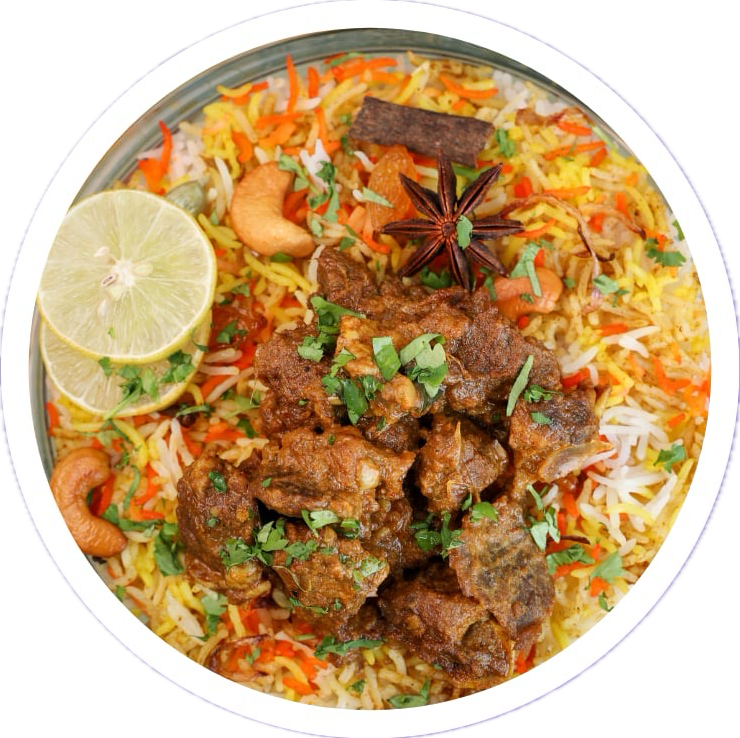

ข้าวมันไก่ต้ม 59-
ข้าวมันไก่ สูตรต้นตำรับดั้งเดิมมีมานานถึง 60 ปี
พร้อมน้ำจิ้ม ไก่นำเข้าจากประเทศนอร์เวย์ ต้มในน้ำซุป
เห็ดหอมอร่อย

ข้าวมันไก่ สูตรต้นตำรับดั้งเดิมมีมานานถึง 60 ปี
พร้อมน้ำจิ้ม ไก่นำเข้าจากประเทศนอร์เวย์ ต้มในน้ำซุป
เห็ดหอมอร่อย

ข้าวต้มสูตรพิเศษของเรา ผสมผสานกับปลากระพงสดใหม่ ปรุงรสจากเชฟชื่อดัง ทำให้ข้าวต้มปลากระพงอร่อยไม่ซ้ำไคร

เมนูสำหรับคนเร่งรีบ อร่อยง่าย ๆ ไข่ของเราทอดไม่ใช้น้ำมัน กุญเชียงทำจากเนื้อ 100% ไม่ใส่สารกันเสีย ดีต่อสุขภาพของคุณ

ข้าวต้มสูตรพิเศษของเรา ผสมผสานกับกุ้งเเม่น้ำสดใหม่ ปรุงรสจากเชฟชื่อดัง ทำให้ข้าวต้มกุ้งอร่อยเเบบลงตัว

ข้าวหมกเนื้อ สูตรอาหรับ ข้าวเม็ดยาว นุ่ม เนื้อวัวชั้นดีหมกนาน 4 ชั่วโมง ทำให้เนื้อมีความหอม นุ่มเป็นพิเศษ
ขนมปังทาเนยปิ้งเตาถ่าน หอม นุ่ม เพราะเราใช้ขนมปังสดใหม่จากเตา ราดด้วยนมข้นหวานที่เราทำเอง

ขนมจีบแป้งบาง ไส้เป็นเนื้อกุ้ง 100% ไม่ผสมแป้ง ทำให้ท่านได้สัมผัสรสชาติกุ้งเเบบเต็มปากเต็มคำ กินคู่หับน้ำจิ้มซีฟู้ด

ปาท่องโก๋ แป้งหอม นุ่ม กรอบนอก นุ่มใน เราทอดด้วยน้ำมันรำข้าวคุณภาพ ทานคู่กับนมข้นหวานและสังขยาใบเตยที่เราเป็นสูตรลับของเรา

ซาลาเปาถั่วเเดง ถั่วเเดงเกรดพรีเมียม นุ่ม หอม นึ่งในอุณหภูมิที่เหมาะสม ทำให้ถั่วเเดงไม่แห้งเป็นผง เป็นเมนูเเนะนำของร้านที่ท่านต้องลองด้วยตัวเอง
ขนมปังปิ้งเตาถ่าน หอม นุ่ม เพราะเราใช้ขนมปังสดใหม่จากเตา ราดด้วยสังขยาใบเตยสูตรเฉพาะของร้านเรา